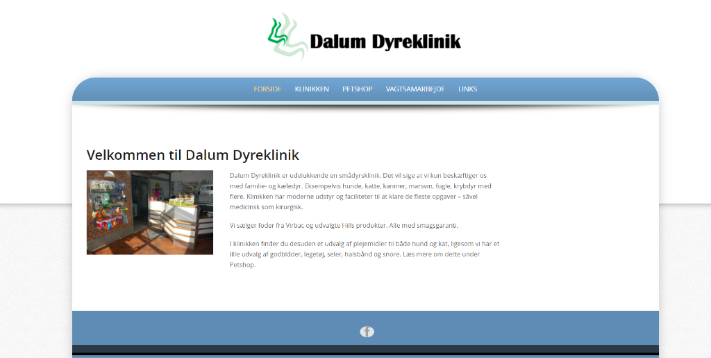
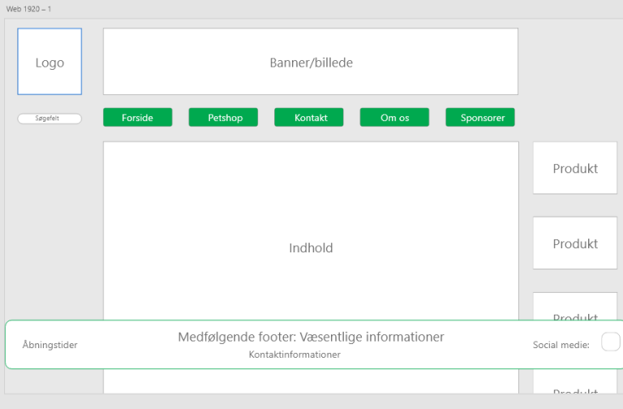

Redesign af hjemmeside
I dette projekt fik vi til opgave at re-designe en hjemmeside som vi følte havde mange mangler ift. design og funktionalitet.

Vi skulle først og fremmest udarbejde persona’er og scenarier der skulle kunne væres klientens typiske brugere. Derefter blev der udarbejdet en heuristisk evaluering af hjemmesiden ved hjælp af Nobanet Usability Guideline s også kaldt NUG. Her blev vi i gruppen enige om de forskellige mangler og områder vi kunne forbedre hjemmesiden på. Der blev derudover anvendt andre teorier og metoder til at evalurere og analysere hjemmesiden på, der blev her bl.a. anvendt en C.R.A.P analyse, som indebære contrast, repitition, allignment og proximity. Her blev der også analyseret typografi, farver osv. Der blev derefter lavet en liste over de mest prioriterede problemer med siden, så vi kunne fokusere på hvad der skulle forbedres først. Derefter agerede vi os i gang med at re-designe siden på Adobe XD. Vi startede med at opbygge nogle wireframes også derefter så småt at lave en prototype.
Wireframesene og prototyperne blev egentligt vidt forskellige, men det viser også hvordan ens design kan ændre sig i løbet af processen. Den endelige prototype ser også væsentlig anderledes ud ift. den første prototype. Der blev taget inspiration fra bl.a. andre klinikker og andre sider generelt til at følge hvilke trends og tendenser indenfor brugeradfærd og UI, om hvordan andre gør det. Der blev også udarbejdet et styletile i et artboard i dokumentet der blev brugt til den nye hjemmeside.
Ovenfor kan resultatet af den endelige hjemmeside ses.